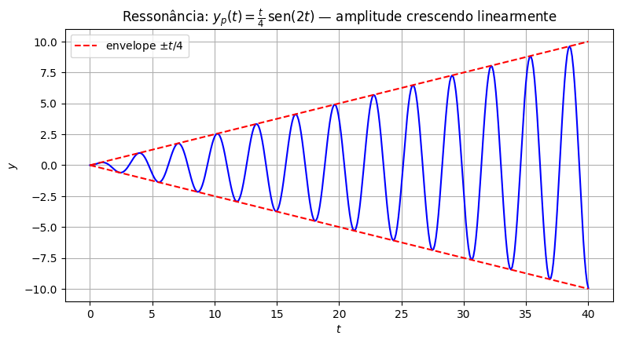

Equações Não Homogêneas e Método dos Coeficientes a Determinar#
Até agora, resolvemos \(ay''+by'+cy=0\), onde o lado direito era sempre zero. Chegou a hora de resolver
a equação não homogênea. Essa aula (e a próxima) desenvolvem um único método, chamado coeficientes a determinar, através de uma sequência de exemplos, cada um revelando uma sutileza nova. No final, chegamos a uma tabela que resume tudo.
Um resultado que organiza tudo: \(y=y_h+y_p\)#
Apresentamos a seguir um resultado que resume como serão escritas as soluções da equação não homogênea acima.
Resultado. A solução geral de \(ay'+by'+cy=F(t)\) é
em que \(y_p\) é qualquer solução particular da equação não homogênea, e \(y_h=c_1y_1+c_2y_2\) é a solução geral da equação homogênea associada \(ay'+by'+cy=0\) (que já sabemos encontrar, nos três casos do discriminante).
Por que isso funciona: se \(y\) é uma solução qualquer da equação não homogênea, e \(y_p\) é uma solução particular fixada, considere \(w=y-y_p\). Então
ou seja, \(w\) resolve a equação homogênea. Pelo teorema da aula passada, \(w=c_1y_1+c_2y_2\) para alguma escolha de \(c_1,c_2\). Logo, \(y=y_p+c_1y_1+c_2y_2\), que é exatamente a fórmula acima.
Este resultado nos mostra que resolver a equação não homogênea vira duas tarefas: (1) resolver a homogênea associada, e (2) achar uma solução particular qualquer, \(y_p\).
O método dos coeficientes a determinar é uma receita prática para achar essa \(y_p\) quando \(F(t)\) tem uma forma “simples” — exponencial, polinômio, seno/cosseno, ou combinações desses. A ideia central, em todos os exemplos a seguir, é tentar uma solução particular com a mesma “cara” de \(F(t)\).
Exemplo 1: quando \(F(t)\) é uma exponencial#
Resolva
Homogênea associada: \(r^2-3r+2=(r-1)(r-2)=0 \Rightarrow r=1,2\), então \(y_h=c_1e^{t}+c_2e^{2t}\).
Solução particular: já que \(F(t)=e^{4t}\), a ideia é tentar \(y_p\) com a mesma cara:
Então \(y_p'=4Ae^{4t}\) e \(y_p''=16Ae^{4t}\). Substituindo:
Logo \(y_p=\tfrac16e^{4t}\), e a solução geral é
Exemplo 2: quando \(F(t)\) é seno ou cosseno#
Resolva
Homogênea associada: \(r^2+r-2=(r+2)(r-1)=0 \Rightarrow r=-2,1\), então \(y_h=c_1e^{-2t}+c_2e^{t}\).
Primeira tentativa (que vai falhar): já que \(F(t)=\cos t\), seria natural tentar \(y_p=A\cos t\). Mas \(y_p'=-A\,\text{sen}\,t\) e \(y_p''=-A\cos t\), então
Para essa igualdade valer para todo \(t\), precisaríamos de \(-A=0\) (coeficiente do seno) e \(-3A=1\) (coeficiente do cosseno) ao mesmo tempo.
O problema é que derivar um cosseno produz um seno, e vice-versa, então as duas funções aparecem misturadas e precisam estar as duas na tentativa.
Tentativa certa: \(y_p = A\cos t + B\,\text{sen}\,t\). Substituindo (contas análogas às de cima) e agrupando cosseno e seno separadamente, chega-se ao sistema
cuja solução é \(A=-\tfrac{3}{10}\), \(B=\tfrac{1}{10}\). A solução geral é
Exemplo 3: quando \(F(t)\) é um polinômio#
Resolva
Homogênea associada: \(r^2-r-2=(r-2)(r+1)=0 \Rightarrow r=2,-1\), então \(y_h=c_1e^{2t}+c_2e^{-t}\).
Primeira tentativa (que vai falhar): já que \(F(t)=t\), seria natural tentar \(y_p=At\). Mas \(y_p'=A\) e \(y_p''=0\), então
Comparando os coeficientes de \(t\): \(-2A=1\Rightarrow A=-\tfrac12\). Mas comparando os termos constantes: \(-A=0\Rightarrow A=0\). De novo, impossível de resolver. O problema, dessa vez é que derivar \(At\) produz uma constante, que também precisa ser “absorvida” por alguém na tentativa.
Tentativa certa: um polinômio completo do mesmo grau, \(y_p=At+B\). Substituindo: \(y_p'=A\), \(y_p''=0\), então
Daí \(-2A=1\Rightarrow A=-\tfrac12\), e \(-A-2B=0\Rightarrow B=\tfrac14\). A solução geral é
Exemplo 4: quando \(F(t)\) é um produto exponencial vezes trigonométrica#
Resolva
Homogênea associada: \(r^2+4=0 \Rightarrow r=\pm2i\), então \(y_h=c_1\cos2t+c_2\,\text{sen}\,2t\).
Tentativa: juntando as duas lições anteriores, precisamos da exponencial e do par cosseno/seno; tentamos
Calculando as derivadas (regra do produto):
Substituindo em \(y''+4y\):
Igualando os coeficientes: \(2B+4A=1\) e \(4B-2A=0\) (ou seja, \(A=2B\)). Substituindo: \(2B+8B=1 \Rightarrow B=\tfrac1{10}\), \(A=\tfrac15\).
A solução geral é
Quando o “”chute”” já é solução da homogênea#
Em todos os exemplos acima, a tentativa (depois de ajustada) sempre deu certo. Mas existe uma armadilha que ainda não apareceu: o que fazer quando a forma natural de \(y_p\) já é, ela mesma, solução da equação homogênea?
Quando isso acontece, substituir a tentativa na equação sempre dá \(0\) do lado esquerdo (afinal, é uma solução da homogênea!) e \(0\) nunca vai ser igual a \(F(t)\not\equiv0\). A tentativa é automaticamente contraditória, não importa quais valores dermos aos coeficientes.
A correção é sempre a mesma ideia que já usamos antes, lá nas raízes repetidas: multiplicar a tentativa por \(t\) (e, se ainda assim colidir, por \(t^2\)).
Exemplo 5: ressonância simples#
Resolva
Homogênea associada: \(r^2-3r+2=(r-1)(r-2)=0 \Rightarrow r=1,2\), então \(y_h=c_1e^{t}+c_2e^{2t}\).
Repare: a tentativa natural seria \(y_p=Ae^{2t}\), mas \(e^{2t}\) já é solução da homogênea (é \(y_2\))! Substituir daria \(0=e^{2t}\), impossível. Seguindo a correção, multiplicamos por \(t\):
Calculando as derivadas e substituindo (fica de exercício), chega-se a \(A=1\). A solução geral é
Exemplo 6: ressonância dupla (raiz repetida)#
Resolva
Homogênea associada: \(r^2-4r+4=(r-2)^2=0 \Rightarrow r=2\) (repetida), então \(y_h=(c_1+c_2t)e^{2t}\).
Aqui a armadilha é dupla: a tentativa \(y_p=Ae^{2t}\) falha (colide com \(e^{2t}\)), e a correção “óbvia” \(y_p=Ate^{2t}\) também falha, porque \(te^{2t}\) já é a outra solução da homogênea.
Precisamos multiplicar por \(t\) mais uma vez:
Substituindo (mais uma vez, uma boa conta para treinar), chega-se a \(A=\tfrac12\). A solução geral é
Exemplo 7: ressonância com oscilação — o caso da ressonância física#
Resolva
Homogênea associada: \(r^2+4=0 \Rightarrow r=\pm2i\), então \(y_h=c_1\cos2t+c_2\,\text{sen}\,2t\).
A tentativa natural, \(y_p=A\cos2t+B\,\text{sen}\,2t\), colide de novo com a homogênea (é exatamente a cara de \(y_h\)). Multiplicando por \(t\):
Substituindo, chega-se a \(A=0\) e \(B=\tfrac14\), então
Repare no termo novo: \(\frac{t}{4}\,\text{sen}\,2t\) tem uma amplitude que cresce sem parar conforme \(t\) aumenta (o fator \(t\) na frente). Isso acontece quando a frequência de forçamento (\(\omega=2\), o coeficiente dentro do \(\cos2t\) de \(F(t)\)) coincide com a frequência natural do sistema (\(\omega_0=2\), o coeficiente dentro do seno e cosseno na solução homogêmea, vindo de \(r=\pm2i\)).
import numpy as np
import matplotlib.pyplot as plt
c1_, c2_ = 0, 0 # apenas para ilustrar y_p isoladamente (não é PVI da aula)
t_vals = np.linspace(0, 40, 400)
y_vals = c1_*np.cos(2*t_vals) + c2_*np.sin(2*t_vals) + (t_vals/4)*np.sin(2*t_vals)
plt.figure(figsize=(9, 4.5))
plt.plot(t_vals, y_vals, 'b', linewidth=1.5)
plt.plot(t_vals, t_vals/4, 'r--', linewidth=1.5, label=r'envelope $\pm t/4$')
plt.plot(t_vals, -t_vals/4, 'r--', linewidth=1.5)
plt.title(r"Ressonância: $y_p(t)=\frac{t}{4}\,\mathrm{sen}(2t)$ — amplitude crescendo linearmente")
plt.xlabel(r"$t$"); plt.ylabel(r"$y$")
plt.legend()
plt.grid(True)
plt.show()

A tabela geral#
Juntando os sete exemplos numa receita só: para resolver \(ay''+by'+cy=F(t)\), a tentativa de \(y_p\) depende da forma de \(F(t)\):
\(F(t)\) |
Tentativa inicial para \(y_p(t)\) |
|---|---|
\(P_n(t)\) (polinômio de grau \(n\)) |
\(t^s\big(A_0+A_1t+\cdots+A_nt^n\big)\) |
\(P_n(t)\,e^{\alpha t}\) |
\(t^s\big(A_0+A_1t+\cdots+A_nt^n\big)e^{\alpha t}\) |
\(P_n(t)\,e^{\alpha t}\cos\beta t\) ou \(P_n(t)\,e^{\alpha t}\,\text{sen}\,\beta t\) |
\(t^s e^{\alpha t}\Big[\big(A_0+\cdots+A_nt^n\big)\cos\beta t + \big(B_0+\cdots+B_nt^n\big)\,\text{sen}\,\beta t\Big]\) |
em que \(s\in\{0,1,2\}\) é o menor inteiro que evita que algum termo da tentativa coincida com uma solução da homogênea associada:
\(s=0\): nada colide (Exemplos 1 a 4).
\(s=1\): a tentativa “crua” colide com uma solução da homogênea (Exemplos 5 e 7).
\(s=2\): mesmo multiplicando por \(t\) ainda colide e é necessário multiplicar mais uma vez; esse caso só acontece quando a raiz correspondente é repetida (Exemplo 6).
Essa tabela cobre exponenciais puras (\(\beta=0\)), polinômios puros (\(\alpha=\beta=0\)), senos/cossenos puros (\(\alpha=0\), \(P_n\) constante) e todas as combinações.
O que vem a seguir#
O método dos coeficientes a determinar resolve a equação não homogênea sempre que \(F(t)\) tiver uma das formas da tabela (o que cobre a grande maioria dos casos de interesse em engenharia). Existe um método mais geral a variação de parâmetros que funciona para qualquer \(F(t)\), ao custo de mais trabalho algébrico; fica para um outro tópico.
Por ora, já temos tudo que precisamos para voltar ao oscilador harmônico forçado e entender, de vez, o batimento e a ressonância que só simulamos numericamente lá em modelagem.